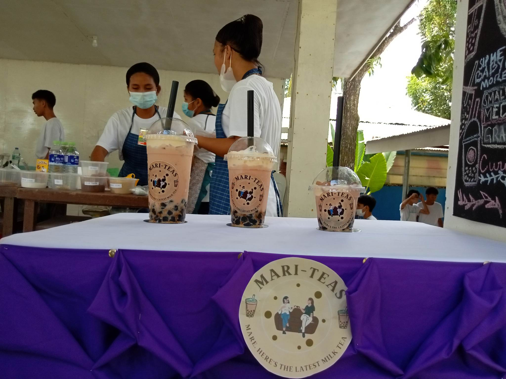

Welcome To Mariteas, A Student Website Made By Grade 10 Students From Star Of The Sea High School Inc ZDS. In Hear It Showcases Our Milk Tea Recipe And Procedures On How To Make One, Along With Some Pictures Of The Finished Product
Ingredients: -1 Bag Of Tapioca Pearls -Creamer (We Used Nescafe Coffeemate) -Tea (We Used Lipton Tea) -Butter -All Purpose Cream -1 Bag Of White Sugar -1 Bag Of Brown Sugar -1 Can Of Condensed Milk
Procedure: Cook 3 cups of tapioca pearl for 30 minutes + rinse the tapioca then put it in a bowl with a hot water and brown sugar to caramelize the tapioca For the tea mixture: 7 pieces of yellow lipton tea good for three cups (small, medium, and large) + boiling water 7 pieces of Coffee (coffeemate) For the cream Mix ½ Butter ½ Nestle All Purpose Cream 5 tablespoons of sugar 3 tablespoons of condensed Milk In A Bowl Then Pour The Tapioca Pearls Into The Cup, Add The Tea Mixture, Then The Cream On Top Of The Tea, You Can Then Add Any Toppings You Like.
